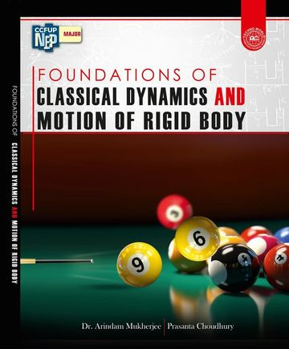

Research Interest
Public-key Cryptanalysis with a focus on Post-quantum Secure Schemes and Hardness Assumptions
Experience
Assistant Professor in Mathematics
Achhruram Memorial College, Jhalda, India
Since November 2019
Education
M.Sc. in Mathematics
IIT Madras (2016–2018)
B.Sc. Honours in Mathematics
Sidho-Kanho-Birsha University, Purulia (2013–2016)
Publications & Preprints
Talks & Presentations
Crypto Café, Department of Mathematics, Florida Atlantic University on November 25, 2025
NIWC - Lattice Based Cryptography, MNNIT Allahabad on July 5, 2024
Workshop on Lattice-based PQC, Ashoka University on April 2, 2024
Asiacrypt 2023, Guangzhou, China on December 7, 2023
Book

Foundations of Classical Dynamics and Motion of Rigid Body
Publisher: Techno World
ISBN: 978-93-89314-93-9
Year: 2025
Teaching
Since November 2019, I have been serving as an Assistant Professor in Mathematics at Achhruram Memorial College, Jhalda. At present, I am driven by the objective of incorporating computer programming into the teaching and learning of mathematics.
Subjects Taught
- Calculus
- Real Analysis
- Group Theory
- Basic Number Theory
- Computer Programming in C
- Numerical Analysis
- Python Programming (Certificate Course)
Academic Duties under Sidho-Kanho-Birsha University
- Paper Setter
- Examiner
- Head Examiner
Educational Resources
Skills & Expertise
Achievements & Awards
NBHM PhD Fellowship (2018), DAE, Government of India
CSIR-UGC JRF – AIR 70 (December 2017) & AIR 107 (December 2016)
GATE 2018 – AIR 145
JAM 2016 – AIR 156
Service & Academic Activities
Peer Review: INDOCRYPT 2023, ASIACRYPT 2024, INDOCRYPT 2025, ISEAISAP 2026, ASIACRYPT 2026
Programme Committee: ISEAISAP-2026
IQAC Coordinator – Achhruram Memorial College, Jhalda